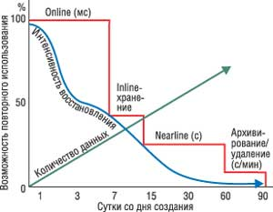
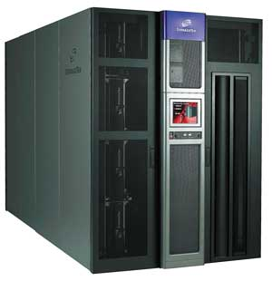
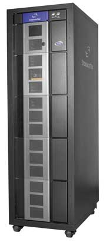
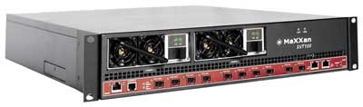
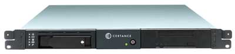

Олег Спиряев
Рост объемов информации, связанный с развитием практически любого современного бизнеса, увеличение числа пользователей корпоративной информационной системы требуют надежного аппаратно-программного обеспечения, которое позволило бы ликвидировать информационную разобщенность и наладить работу общедоступного информационного ресурса. Решение этих и многих других проблем заключается в развертывании мощных систем хранения данных. Они способны обеспечить своевременную обработку и надежное хранение постоянно возрастающего объема информации с учетом потребностей развития корпоративных прикладных систем. Но для этого необходимо сформировать единую среду управления информацией, в рамках которой будет происходить доступ к данным и их обработка.
Поскольку вместе с ростом объема данных растут и системы хранения, управлять ими с помощью старых методов становится все труднее, а стоимость их резко возрастает. И при этом становится трудно реализовать высокую доступность, достаточную производительность, адекватную темпам развития бизнеса, надежность хранения информации, которая соответствовала бы требованиям бизнеса и государственных регулирующих органов к долгосрочному хранению информации. Конечно, современные технологии позволили многим компаниям существенно повысить показатели эффективности, продуктивности и прибыльности. Но сегодня перед ИТ-директорами и специалистами встает чрезвычайно сложная проблема - как быть с огромным объемом распределенных данных, циркулирующих в информационных системах. Известно, что в последние годы объем хранимой на серверах информации составляет сотни гигабайт даже в небольших компаниях. Невозможность эффективно управлять данными может негативно сказаться на прибыльности предприятия и ограничить его способность к росту.
Концепция Information Lifecycle Management (ILM) исходит из модели жизненного цикла информации, включающего этапы ее создания, применения и уничтожения, а также из утверждения, что различная информация имеет разную степень важности для бизнеса. Задача ILM состоит в том, чтобы предоставить информационному ресурсу уровень обслуживания, соответствующий его степени важности. Другими словами, более важные данные должны быть лучше защищены и к ним нужно обеспечить наиболее быстрый доступ, менее важные данные меньше нуждаются в защите и для них не требуется высокая скорость доступа и восстановления после сбоев. В ходе жизненного цикла значимость некой конкретной информации для бизнеса в разные моменты времени может меняться; соответствующим образом должен измениться и уровень обслуживания данного информационного ресурса. Именно на адекватности уровня обслуживания в каждый момент времени и основано снижение затрат на поддержку информационных ресурсов. Некорректное назначение уровня обслуживания - это либо неоправданные затраты, если уровень обслуживания превышает необходимый, либо неоправданные риски, если уровень обслуживания недостаточен.
Сегодня ИТ-индустрия предлагает бесконечное разнообразие инструментов для управления хранением информации. Нацеленные на то, чтобы облегчить жизнь администраторам систем, на деле они, добавляясь к уже имеющимся средствам, только увеличивают сложность управления и вызывают дополнительные затраты на обучение и интеграцию с существующим техническим окружением.
Чтобы упростить управление информацией в ходе ее жизненного цикла, необходим единый взгляд на все компоненты решения, причем как на программные, так и на аппаратные. Кроме того, типовые задачи управления нужно автоматизировать с помощью набора стандартных методик. Такой подход дает возможность глобального контроля над информационными ресурсами и обеспечивает унифицированную автоматизацию управления жизненным циклом информации. Напомним, что цель ILM - обеспечение оптимальной стоимости, скорости доступа, защиты и управления информацией в ходе ее жизненного цикла путем обеспечения комплексного набора автоматизированных сервисов для управления приложениями, данными, устройствами хранения и платформами. При этом уровень обслуживания информационного ресурса задается посредством набора типовых правил.
Процесс управления жизненным циклом информации начинается с ее классификации на основе значимости для бизнеса. Ценность информации очень часто связана с важностью приложения, которое его использует. Если приложение необходимо для успешного функционирования бизнеса компании, это означает, что информация, которую использует и производит данное приложение, - данные, файлы, папки, диски, базы данных и файловые системы, также важна для бизнеса. Всю эту информацию можно представить как совокупность связанных с конкретным бизнес-приложением информационных групп, которые служат основной единицей управления в ILM. Ценность информации для бизнеса определяется именно на уровне информационной группы, и именно для этой совокупности информации назначаются сервисы, такие, как репликация или резервное копирование. Второй шаг после выявления и классификации (т. е. назначения бизнес-ценности) информационных групп - оценка уровня сервиса, который в данный момент обеспечивается для данной информационной группы. Чем более высокий уровень безопасности, скорости доступа и защиты требуется приложению и его информационным группам, тем выше уровень его обслуживания и затраты на него.
Далее необходимо убедиться, что наиболее важные для бизнеса приложения и их информационные группы получили более высокий уровень обслуживания, чем менее важные приложения и их информация. Если это не так, либо затраты на защиту не слишком важной информации оказываются чересчур велики, либо возникают неоправданные риски из-за ненадлежащей защиты более важной информации. После сравнения сервисов, которые обеспечиваются приложениям и их информационным группам, необходимо оценить, является ли каждый из уровней обслуживания необходимым и достаточным. Например, тот факт, что самое важное приложение получает самый высокий уровень обслуживания, не обязательно означает, что этот уровень достаточен для поддержания его работоспособности.
Определение требуемого уровня обслуживания для приложения и его информационных групп требует тщательной оценки того, как отсутствие доступа к этой информации влияет на функционирование бизнеса. Например, вполне может оказаться, что самый высокий уровень обслуживания предполагает пятидневный срок восстановления информации в случае катастрофы, что совершенно неприемлемо для некоторых бизнес-приложений.
Классификация и назначение уровней сервиса - это такой же непрерывный процесс, как и само развитие бизнеса. Для того, чтобы предприятие было гибким и адаптивным, ИТ не должны сдерживать бизнес, им необходимо обеспечить возможность его изменения. Поскольку ценность информационных ресурсов меняется по мере изменения приоритетов бизнеса, процесс ILM тоже должен быть непрерывным. Ведь это принципиально новый взгляд на управление информацией и устройствами хранения; ставя во главу угла бизнес-приложения, он позволяет назначить каждому из них тот уровень обслуживания, который соответствует значимости этого приложения для предприятия. Внедрение ILM позволяет снизить совокупную стоимость владения (TCO) за счет снижения затрат на оборудование и ПО. Автоматизация управления жизненным циклом информации означает такой уровень интеграции приложений, информационных ресурсов и сервисов управления хранением, при котором достаточно задать степень важности приложения или его информационных групп для того, чтобы соответствующий уровень обслуживания был применен автоматически.
Корпорация StorageTek (http://www.storagetek.com) стояла у истоков создания концепции ILM и сегодня использует собственную стратегию в этой области. Как уже отмечалось, ценность бизнес-информации (потребность в повторном ее использовании) меняется в зависимости от времени ее получения. По мнению специалистов StorageTek, хранение подобной информации в течение первых трех суток должно осуществляться с помощью online-устройств, затем (3-7 сутки) необходимы так называемые inline-накопители, далее (7-60 сутки) предлагается задействовать хранилища nearline, после чего должно выполняться архивирование информации или ее удаление (рис. 1). Для реализации этих этапов, в зависимости от стоимости, скорости доступа и надежности, для резервного копирования используют монолитные дисковые системы хранения корпоративного класса, модульные дисковые системы, массивы SATA- или JBOD-дисков, а также различные варианты ленточных систем хранения.
|  | Рис. 1. Жизненный цикл информации.
|
Процесс резервного копирования
Система резервного копирования - это неотъемлемая часть надежной информационной системы компании. Резервное копирование данных в той или иной степени применяется сейчас практически повсеместно и выполняется по определенному расписанию, в зависимости от характера информации и структуры компании. Существует несколько принципов организации подобных систем. Естественно, по стоимости все эти решения существенно различаются, а их выбор зависит от целей, которые ставит перед собой компания, от стоимости самих данных, размера предполагаемых денежных вложений, а также стоимости одной минуты простоя информационной системы. Конечно, вопросы стратегии в сфере страхового копирования данных не решаются только техническими службами компании. Точно так же на самом высоком уровне должно быть принято решение, какая именно информация представляет наибольшую ценность и как долго требуется хранить копии тех или иных данных. Однажды выбрав стратегию резервирования, руководству важно найти время для того, чтобы описать ее и сделать неотъемлемой частью технической политики своей компании.
Выбор систем резервирования весьма широк, но в любом случае, принимая решение, приходится идти на компромисс. В результате может потребоваться реализовать несколько стратегий резервирования, а значит, обеспечить поддержку самых разных накопителей, пакетов специализированных программ и типов носителей информации. Например, предприятию может понадобиться резервное копирование финансовой информации, куда войдут все файлы бизнес-приложений, распределенные базы данных, в которых хранится такая информация, а также отчетная документация и презентации для финансового анализа.
Организация процесса резервного копирования и архивирования - это неотъемлемая часть политики защиты информации. От правильного выбора технических и программных средств резервного копирования и архивирования, от определения оптимальной топологии подключения этих устройств зависит эффективность защиты и восстановления данных, жизненно важных для функционирования организации. Лучшую эффективность и защиту инвестиций обеспечивают автоматизированные системы резервного копирования и архивирования информации, автоматически ведущие эти процессы со всех необходимых серверных систем и ПК на устройства с автоматической сменой носителей. Заметим, что выбор системы резервного копирования или архивирования далеко не прост. Он предполагает учет множества параметров, связанных как с составом парка компьютеров на предприятии и имеющегося ПО, так и с возможностями аппаратного обеспечения резервирования и затратами на эксплуатацию всего комплекса резервного копирования.
Сегодня на рынке нет недостатка в системах страхового копирования данных, но реально выбор делается между устройствами с последовательной организацией данных (ленточные накопители) или с произвольным доступом (дисковые накопители). При выборе следует принять во внимание такие факторы, как тип требуемого резервирования и восстановления информации, номинальная скорость, максимальная емкость носителей и устройства в целом, начальная стоимость устройства и стоимость владения им, надежность всей системы, а также стоимость самого носителя и т. д.
Ленточные накопители до недавнего времени оставались самым универсальным, дешевым и, как следствие, предпочтительным средством защиты целостности данных. Отметим также, что внешние накопители на магнитных лентах часто можно использовать в системах иерархического хранения данных (Hierarchical Storage Management, HSM). В таких системах медленные, но емкие внешние накопители обычно выступают в качестве второго или третьего уровня хранения (концепция структурированного хранения подразумевает организацию иерархической структуры устройств хранения информации).
Накопители на магнитной ленте
Существует несколько основных видов устройств и систем резервного копирования, предназначенных как для малых предприятий, так и для крупных корпораций с распределенными филиалами. Все они отличаются друг от друга по ряду характеристик - и не в последнюю очередь по степени автоматизации операций резервного копирования.
В настоящее время из аппаратных средств резервного копирования наиболее распространены ленточные устройства и системы, которые по мере развития технологий кардинально видоизменились. В них в несколько раз увеличена скорость записи/считывания данных (достигающая сейчас десятков мегабайт в секунду), емкость (современный картридж с магнитной лентой вмещает уже многие сотни гигабайт), надежность и отказоустойчивость. Сейчас существует несколько типов ленточных устройств и систем резервного копирования - стримеры, автозагрузчики, библиотеки и т. д.
Ленточные накопители (стримеры) записывают (и считывают) информацию на картридж, заменивший традиционную бобину с магнитной лентой. В стекерах (stackers), которые, сейчас, правда, используются все реже из-за своей недостаточной гибкости при эксплуатации, устанавливается один привод и несколько картриджей. Картриджи устанавливаются в специальных лотках и подаются в привод стекера в жестко установленном порядке при помощи специального роботизированного механизма замены картриджей. Далее в иерархии ленточных устройств хранения (по их сложности) следуют автозагрузчики, отчасти напоминающие стекеры. Обычно в такие устройства также установлен один привод и несколько картриджей (всего, например, до 10). От стекера автозагрузчики отличаются тем, что картриджи (размещаемые в специальном магазине) можно подавать в произвольном, а не в жестком порядке. Можно также назначать периодичность смены картриджей, например, указать ежедневную их замену.
Ленточные библиотеки - это еще более сложные решения для резервного копирования на магнитную ленту, в состав которых входит множество картриджей и несколько приводов (за счет чего значительно повышается скорость резервного копирования и восстановления). Библиотека состоит из отсеков, в которых хранятся картриджи, и механизма смены картриджей в накопителях. Соответственно существуют и разные схемы загрузки картриджей роботизированным механизмом. Например, существует схема, согласно которой любой картридж загружается в любой привод. В другой схеме каждый накопитель работает только с конкретными картриджами. Наиболее важные характеристики ленточных библиотек - это скорость передачи данных, емкость и надежность. Ленточные библиотеки отличаются друг от друга по таким параметрам, как число слотов для картриджей и число приводов, количество портов доступа к картриджам, перечень поддерживаемых ОС, а также по возможностям встроенных функций управления. Библиотеки представляют собой очень мощные решения для резервного копирования, позволяющие с большой скоростью выполнять резервное копирование огромных объемов данных (до сотен терабайт).
Современные библиотеки магнитных лент имеют довольно надежную конструкцию, в частности, несколько приводов магнитных лент, что позволяет избежать тотального сбоя при выходе из строя одного привода. Однако из-за того, что большинство библиотек предыдущего поколения не допускает расширения архитектуры, не удается достигнуть желаемого уровня непрерывности работы. В таких конструкциях за перемещение картриджей между приводами и слотами отвечает единый большой и сложный роботизированный механизм.
Корпорация StorageTek лидирует в области разработки и производства ленточных роботизированных библиотек. Считается, что оборудование StorageTek гарантирует стабильность и надежность корпоративных архивных данных. Обеспечивая быстрый коллективный доступ к данным, ленточные роботизированные библиотеки корпорации успешно используются в финансовых и банковских структурах, телекоммуникационных компаниях, учебных учреждениях, музеях. Сегодня библиотеки StorageTek установлены в более чем тысяче организаций в 35 странах мира. Совокупный объем запущенных библиотек составляет более 100 Пбайт данных.
Ленточные библиотеки нового поколения StreamLine имеют модульную конструкцию и сменили разработанную еще в середине 1980-х годов флагманскую систему PowderHorn и библиотеки среднего класса TimberWolf и L700. В настоящее время серия StreamLine представлена двумя моделями - библиотекой уровня центра обработки данных SL8500 (рис. 2) и рассчитанной на средние компании библиотекой SL500. Добавим, что корпорация Sun Microsystems (http://www.sun.com) поставляет эти системы под маркой StorEdge L8500/L500 соответственно. Особенность новых продуктов StorageTek - возможность комбинировать в одной библиотеке приводы разных стандартов. Так, SL500 поддерживает SDLT и LTO, а SL8500 - еще и фирменные стандарты STK T9840/T9940, рассчитанные на интенсивные операции чтения и записи на ленту. Кроме того, новое поколение устройств имеет значительно более надежную защиту от сбоев. По сравнению с предыдущим поколением библиотек StorageTek усовершенствовано исправление ошибок привода, применяется резервирование робота, контроллеров, портов Pass-Through (в SL8500), поддерживается замена в горячем режиме робота, источников питания и электронных схем, а также обновление микрокода. Кроме того, благодаря особенностям конструкции робота новые библиотеки значительно компактнее своих предшественников (например, SL8500 занимает вдвое меньше места, чем PowderHorn 9310), а модульность и горячая замена основных компонентов позволяют постепенно наращивать конфигурацию SL8500 без остановки ее работы. Библиотека SL8500 может масштабироваться от 1448 до 6500 ленточных картриджей и 64 приводов, несколько подобных библиотек можно через порты Pass-Through связать в единую систему, насчитывающую более 300 тыс. картриджей и 2048 приводов.
|  | Рис. 2. Ленточная библиотека StorageTek StreamLine SL8500.
|
При создании младшей модели SL500 (рис. 3), в которой реализованы основные возможности SL8500, включая и новый роботизированный механизм, инженеры StorageTek стремились обеспечить работу библиотеки в круглосуточном режиме, придать ей масштабируемость и эффективность форм-фактора, позволяющего устанавливать библиотеки в стандартной 19-дюйм стойке вместе с серверами, модульными дисковыми массивами и сетевым оборудованием. Библиотека SL500 состоит из базового модуля высотой 8U (35,6 см), к которому можно добавить до трех модулей расширения также высотой 8U, и в результате библиотека масштабируется от двух приводов и 30 картриджей до 18 приводов и 577 картриджей общей емкостью 115 Тбайт (при использовании лент LTO2). Как подчеркивают представители StorageTek, в отличие от аналогичных продуктов других производителей модульность SL500 не означает ухудшения надежности.
|  | Рис. 3. Ленточная библиотека StorageTek StreamLine SL500.
|
Управление библиотекой выполняется с помощью сенсорной панели или в дистанционном режиме через Web-браузер. Она позиционируется для таких приложений, как архивирование электронной почты и защита от катастроф, резервное копирование в территориально распределенных компаниях, обслуживание Windows-серверов и младших и средних Unix-систем, а также для консолидации в одной системе нескольких небольших библиотек и автозагрузчиков.
Массивы RAIT (Redundant Arrays of Independent Tape) и библиотеки RAIL (Redundant Arrays of Independent Libraries) - это массивы стримеров с избыточностью (их еще называют избыточными массивами независимых стримеров). Например, в корпусе RAIT-массива находится несколько стримеров, каждый из которых одновременно работает только с одним картриджем, за счет чего существенно увеличиваются скорость резервного копирования и отказоустойчивость (RAIT-массив создан на базе спецификаций RAID, применяемых для дисковых подсистем). Правда, за высокую скорость и надежность RAIT-массивы платят малой емкостью и невозможностью автоматической смены (так называемой ротации) носителей. Следует сказать, что технологию RAIT-массивов можно определить и при помощи программных средств, группируя автозагрузчики или ленточные библиотеки.
Несмотря на постоянные усовершенствования (повышение скорости передачи данных, роботизацию, увеличение емкости, улучшение других характеристик), когда речь заходит о хранении и доступе к данным, ленточные носители не могут сравниться по скорости и эффективности с жесткими дисками. И хотя ИТ-менеджеры комфортно чувствуют себя с ленточными накопителями, основные причины их применения - это все-таки стоимость и портативность. На протяжении многих лет ленты были самыми недорогими накопителями, используемыми для хранения информации, обеспечивая значительную экономию средств по сравнению с жесткими и оптическими дисками. Разница в стоимости между ленточными и дисковыми системами была до недавнего времени серьезным барьером для более широкого распространения дисковых хранилищ.
В последнее время все большую популярность приобретает идея ускорения резервного копирования с помощью специальных массивов из относительно дешевых жестких дисков с интерфейсом ATA/SATA, на которые осуществляется промежуточная запись копируемых данных. Тем не менее ленточные накопители по-прежнему считаются самым экономичным и популярным решением создания резервной копии. Они изначально созданы для хранения данных, предоставляют практически неограниченную емкость (за счет добавления картриджей), обеспечивают высокую надежность, имеют низкую стоимость хранения, позволяют организовать ротацию любой сложности и глубины, архивацию данных, эвакуацию носителей в защищенное место за пределами основного офиса. С момента своего появления магнитные ленты прошли пять поколений развития, на практике доказали свое преимущество и по праву считаются основополагающим элементом практики резервного копирования.
Виртуализация ресурсов хранения
Виртуализацию трудно отнести к совершенно новым технологиям - идеи виртуализации различных вычислительных ресурсов тем или иным образом реализовывались и ранее. Необходимость в виртуализации ресурсов хранения объясняется рядом причин. Прежде всего это резкий рост объемов корпоративных данных, связанный не в последнюю очередь с появлением новых бизнес-приложений, требовательных к хранению данных (упомянем здесь сверхбольшие базы данных в генетике, медицине, геологии, астрономии и космических исследованиях, мультимедиа, огромные архивы электронной почты, объемные базы данных MRP/ERP-систем и систем CAD/CAM/CAE, других корпоративных приложений). Общий объем хранимых корпоративных данных в мире оценивается сегодня во многие сотни петабайт.
Обострились и проблемы хранения и управления большими объемами данных. Это связано в том числе с широким распространением "островов" данных (под ними понимаются данные, находящиеся на различных носителях в гетерогенных системах хранения, нередко территориально удаленных друг от друга и работающих под управлением разных ОС). Для обслуживания таких "островов", отличающихся сложностью конфигураций аппаратных и программных средств, а также разнообразием используемых технологий, необходимы дополнительные материальные и человеческие ресурсы. Ухудшилась оперативность доступа к данным, находящимся в гетерогенных системах хранения, что приводит к значительным финансовым потерям для компаний, бизнес которых связан с оперативной обработкой актуальной и критически важной информации. В той или иной степени перечисленные выше проблемы решаются с помощью технологий виртуализации ресурсов хранения.
Под виртуализацией ресурсов хранения обычно понимается отображение любого количества разнородных носителей, устройств и систем хранения (JBOD, RAID, RAIT и т. д.) в виде единого хранилища данных (так называемого виртуального пула) с централизованным управлением. Существует и определение IDC, согласно которому под виртуализацией ресурсов хранения понимается применение ПО, упрощающего управление сложными конфигурациями памяти за счет использования логических представлений физических ресурсов хранения. Можно сказать, что при применении технологий виртуализации "разрываются" физические связи между серверами и устройствами хранения разных типов, а физическая память преобразуется в единый логический пул, состоящий из отдельных гетерогенных устройств хранения, прозрачный доступ к которым организован независимо от их технических особенностей и территориального расположения. Технологии виртуализации ресурсов хранения позволяют:
- оптимизировать использование имеющихся гетерогенных ресурсов хранения и управлять огромными пулами внешней памяти;
- упростить управление гетерогенными системами хранения, разгрузив тем самым системных администраторов;
- сократить срок резервного копирования и восстановления данных, повысив отказоустойчивость всей корпоративной информационной системы;
- снизить совокупную стоимость владения корпоративной системой хранения (за счет устранения "островов" данных, более эффективного использования уже имеющихся устройств и систем хранения, обеспечения работы с ресурсами хранения в гетерогенной среде, возможности построения корпоративной системы хранения из компонентов разных производителей, оптимальных по цене, и т. д.).
Виртуализация хранилищ данныхПод виртуализацией обычно понимают агрегирование множества физических устройств хранения данных (таких, как JBOD, RAID или ленточные накопители) с различными протоколами интерфейсов (SCSI, iSCSI или Fibre Channel) в единый виртуальный пул хранения, из которого при необходимости можно создавать и инициализировать виртуальные тома хранения, предстающие для хост-сервера в виде локально подключенных логических устройств. Усовершенствованное решение виртуализации хранилищ данных предоставляет ИТ-администраторам свободу выбора - обеспечивать доступные ресурсы хранения в виртуальном общем пуле в качестве томов. Иными словами, в виртуализованной среде, когда администратор через централизованную консоль размещает ресурсы хранения из общего виртуального пула на сервер приложения, сервер принуждают воспринимать этот ресурс как реальное устройство хранения, физически подключенное к нему. И именно так этот ресурс отображается в списке устройств, подключенных к серверу, например, как новый диск F или G для сервера Windows либо как новое mountable физическое устройство в Unix, Linux или Solaris. |
Виртуальные библиотеки
По данным META Group, из-за низкого быстродействия ленточных накопителей 60-70% всех операций администрирования при хранении данных связаны с резервным копированием и восстановлением. В последнее время все большую популярность приобретает идея ускорения резервного копирования с помощью специальных массивов из относительно дешевых жестких дисков с интерфейсом SATA, которые служат для промежуточной записи копируемых данных. Реализуется эта идея, как правило, с помощью так называемых виртуальных библиотек VTL (Virtual Tape Library), которые "подставляют" серверу резервного копирования недорогой дисковый массив как обычную ленточную библиотеку. При этом, разумеется, нет необходимости в новом ПО для резервного копирования или модернизации старого.
Предпосылки этой тенденции, с одной стороны, - появление быстрых и недорогих жестких дисков SATA очень высокой емкости, а с другой - потребность в проведении процедуры сохранения необходимого объема данных за ограниченное время, называемое окном копирования, или "окном backup", т. е. время, специально выделенное для осуществления самой операции резервного копирования.
Размер окна копирования определяется несколькими факторами. Поскольку создание резервной копии требует абсолютного доступа к данным, обычно этот процесс проводится во внерабочие часы, когда он минимально сказывается на работе персонала, загруженности серверов и локальной сети. Если объем переносимых во время одной сессии данных превышает размер картриджа магнитной ленты, возникает необходимость ручной замены носителя по требованию программы резервного копирования. Система хранения на жестких дисках может помочь и в этом случае, предоставляя для записи резервной копии свободное пространство, превышающее возможности одного картриджа.
Достоинства сохранения резервных копий данных на жестких дисках (в первую очередь - высокая скорость сохранения и восстановления) и на магнитных лентах (низкая стоимость хранения и неограниченный объем) объединяются в решениях Disk-to-Disk-to-Tape (D2D2T). Такой подход предполагает использование дисковой кэш-памяти в качестве промежуточного этапа в процедуре резервного копирования, конечной целью которого по-прежнему остаются магнитные ленты. Как правило, VTL обеспечивает 100%-ную аппаратную эмуляцию ленточных накопителей определенного типа. Таким образом, о совместимости нового оборудования с используемыми в организации ОС и программами резервного копирования беспокоиться обычно не приходится. Типовой сценарий подключения VTL может выглядеть примерно так. К адаптеру SCSI вместо ленточного накопителя подключается устройство VTL, к нему, в свою очередь, - требуемый ленточный накопитель. Устройство динамически настраивается на имитацию подключенного к нему стримера. Программа резервного копирования, не заметив подмены, продолжает общаться с ним так же, как с обычным ленточным накопителем.
VTL-устройства выпускают сегодня многие компании, в том числе EMC (CLARiiON DL300, DL700), Certance (CP 3100), Maxxan Systems (SVT-100 Virtual Tape System, рис. 4), Network Engine (Virtual Tape Library Appliance), Overland Storage (REO 4000), Quantum (DX30), Sepaton (S2100-DS) и т. д.
|  | Рис. 4. Виртуальная ленточная библиотека Maxxan Systems SVT-100 Virtual Tape System.
|
Линейка виртуальных библиотек корпорации EMC (http://www.emc.com) CLARiiON Disk Library (DL) состоит из двух устройств - DL300 и DL700, построенных соответственно на основе компонентной базы систем хранения CLARiiON CX300 и CX700. Для работы с ПО резервного копирования эти библиотеки имеют механизм эмуляции ленточных библиотек, приводов и даже отдельных картриджей. Возможна эмуляция одной системой одновременно нескольких ленточных библиотек. Данные системы способны эмулировать, в частности, накопительные ленточные устройства Scalar производства компании Advanced Digital Information и ленточные библиотеки серий L и 9700, выпускаемые корпорацией Storage Technology.
Модель DL700 обеспечивает скорость передачи данных 425 Мбайт/с и позволяет хранить до 58 Тбайт несжатых данных. Для модели DL300 эти показатели составляют 225 Мбайт/с и 12,5 Тбайт соответственно. Библиотеки оснащены механизмом аппаратного сжатия данных вплоть до уровня 3:1. В этом случае суммарная емкость систем составляет 174 Тбайт и 37,5 Тбайт.
Подобные решения рассчитаны на организации, которые хотели бы ускорить резервирование данных кратковременного хранения, но не хотят менять имеющееся ПО и отлаженные процедуры. Система CLARiiON DL позволяет повысить скорость резервного копирования по сравнению с ленточной библиотекой на 30-50%, а скорость восстановления - чуть ли не на порядок. При этом данные, как и в системах хранения серии CX, защищены на аппаратном уровне с помощью RAID-технологии. Библиотеки CLARiiON DL совместимы с основными программными системами резервного копирования.
Устройство VTL REO 4000 корпорации Overland Storage (http://www.overlandata.com), как и EMC CLARiiON DL, полностью эмулирует форматы ленточных приводов и работает прозрачно для приложений резервного копирования. Эта система, предназначенная для обслуживания серверов Windows, Linux и Unix, масштабируется до четырех модулей, в каждом из которых установлены жесткие диски SATA емкостью до 2 Тбайт, поддерживает RAID-массивы уровней 0 и 5 и подключается к IP-сетям по протоколу iSCSI либо к сетям SAN на основе Fibre Channel. Часто такие устройства используются совместно с ленточными библиотеками NEO.
Семейство продуктов CP 3100 компании Certance (http://www.certance.com) включает в себя пять конфигураций устройства (рис. 5), способных удовлетворить самые разные требования. Заказчики, предпочитающие законченное полное решение, имеют возможность выбора между настольной или монтируемой в 19-дюйм стойку (высота 1U) моделями, каждая из которых содержит интегрированный накопитель Certance DAT 72. Те же, кто намерен использовать ранее приобретенный ленточный накопитель DDS-4 или DAT 72 (любого производителя), могут построить свое собственное решение D2D2T, комбинируя с имеющимися стримерами встраиваемую, настольную или стоечную (1U) модели устройства. Три разъема SATA позволяют включать дополнительные диски в кэш-память, увеличивая ее объем до 1 Тбайт. Два независимых интерфейса SCSI Ultra160 служат для подключения к серверу резервного копирования, с одной стороны, и управления ленточным накопителем - с другой. Для тех же целей предназначены два порта Gigabit Ethernet, которые по протоколу iSCSI позволяют передавать копируемые данные в кэш-память и переправлять их на ленточный накопитель. Кроме того, через соединение LAN осуществляется Web-управление устройством.
|  | Рис. 5. Виртуальная ленточная библиотека Certance CP 3100.
|
* * *
Итак, ленточные библиотеки сохраняют сильные позиции на рынке, более того, как свидетельствуют аналитики отрасли, их позиции даже могут усилиться, несмотря на рост продаж дисковых систем хранения - или даже благодаря этому. Дисковые системы хранения предлагаются в двух вариантах. Подсистемы, построенные по принципу резервного копирования с дисков на диски (системы "диск-диск"), ориентированы на компании, которые хранят копии данных исключительно на дисковых носителях либо используют дисковые системы в качестве промежуточных носителей, а затем переносят информацию на ленточные устройства. Подсистемы "диск-диск-лента", как правило, поставляются или уже интегрированными с системами резервного копирования на основе накопителей на магнитной ленте или предполагают несложную интеграцию с такими системами.